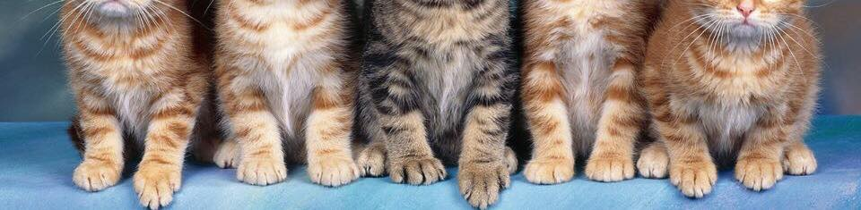

welcome to army of cats
What's up CatLoverz! You have a great opportunity to show your unique, cute or grumpy cat to everyone.
Just follow steps:
1. Send best photos of your cat to cappu4inomaker@gmail.com
2. In the e-mail put a text that says, "To: Oscar Boon "theweekcatsof", From: (Your Full Name), Name: (Your cat), and Comment: (i.e. "HAHAHA my cat is trying kepta duona for the first time ^_^ HAHA").
3. You have to tell about your first smoking experience (if you have not had, we will discuss your situation and inform you whether you will be able visit our website or not) and your opinion about vegetarians. (3 pages, single space, APA format) Find Grading Rubric here www.moodle.lcc.lt. To log in, you will have to enter LCC. Find Bachelor and Master programs on www.lcc.lt
Good Luck!
If you like our website, help us. We are open for donation. Contact cappu4inomaker@gmail.com or send us your help to Kretingos-36, Klaipeda, Lithuania, LT-92307
photo by a.khongpak (flickr.com)